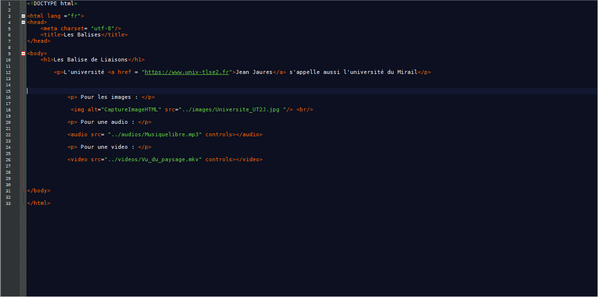
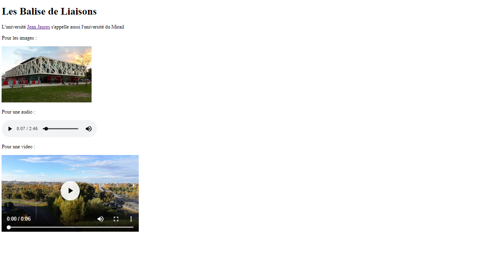

Les balises de liaison
a
Balise permettant de mettre des liens internes, externes et un lien vers une ancre.
audio
Pour insérer des fichiers audio situés sur le WEB ou sur le disque interne.
img
Permet d'insérer une image dans une page, situé sur le WEB ou sur le disque interne.
link
Permet de lier un document HTML à une feuille de style CSS.
object
Pour insérer un objet multimédia.
video
Permet d'insérer des fichiers vidéos situés sur le WEB ou sur le disque interne.
source
Cette balise est utilisée pour insérer des fichiers situés sur le WEB ou sur le disque interne.
Exemple

